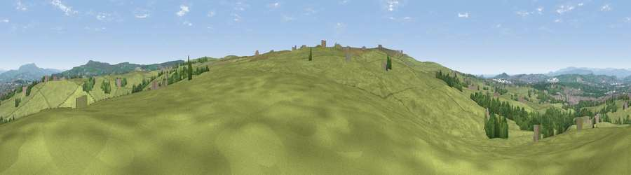

Viewpoint near Green Haworth
#18903 in England · top 41% of its area beats it · near Green Haworth · path 203 mWhere it is
The exact computed spot (SD 74825 25325). Click the marker for map links.
Public access: the nearest public right of way is about 203 m away — the final stretch may cross private land. Computed from Natural England's CRoW access layer and OpenStreetMap rights of way — not the legal definitive map. Always verify locally.
The view, rendered

A 360° render of this exact spot computed from the terrain model, tree cover and land cover — summer colours, afternoon light, calibrated against photographs of famous viewpoints. Real trees, hedges and buildings will differ in detail.
The panorama
Grey silhouette: terrain skyline in each direction (720 bearings, Earth curvature and refraction included). Dashed green: skyline with trees (+15 m) and buildings (+8 m) as obstacles. Blue strip: how far the ground is visible on each bearing.
Where the view opens
Wedge length = distance to the farthest visible ground on that bearing (vegetation-aware). Rings at 10, 25 and 50 km.
What fills the view
84% grassland · 11% woodland · 5% built-up
Angular shares of the visible panorama (visual magnitude), not map area. Landscape diversity 0.24 (0–1 Shannon).
Key numbers
More beautiful places nearby
The staircase of upgrades: each row has a higher view potential than everything closer. Driving times are estimates from straight-line distance, calibrated against real road routing — check an actual route before setting out.
| Place | Direction | Drive | Score |
|---|---|---|---|
| Viewpoint near Belthorn | SW · 2 km | ~5 min | 67.2 |
| Viewpoint near Huncoat | NE · 5 km | ~11 min | 70.6 |
| Great Hameldon | NE · 6 km | ~12 min | 74.2 |
| Darwen Hill | WSW · 8 km | ~16 min | 80.7 |
| Viewpoint near Horwich | SW · 16 km | ~28 min | 81.0 |
| White Brow | SSW · 16 km | ~28 min | 82.9 |
| Warton Crag | NNW · 54 km | ~76 min | 83.2 |
| Viewpoint near Grange-over-Sands | NW · 64 km | ~86 min | 83.4 |
53.72372, -2.38301 · source: screening · position refined by local search. Computed location — check access rights before visiting.